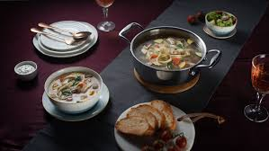
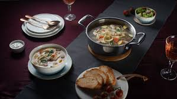

Website Description
This website will be about cooking. Cooking is one of my favorite things to do and I love to make all kinds of food. This website will also have a tabel about my favorite foods along with a form that will allow you to tell me what your favorite food is. Cooking is not only a fun hobby but a skill to increase your quality of life. There is an infinite amount of things to cook and many other ways to prepare things and all kinds of machines and utensils to aid you in creating your perfect dish.
 
